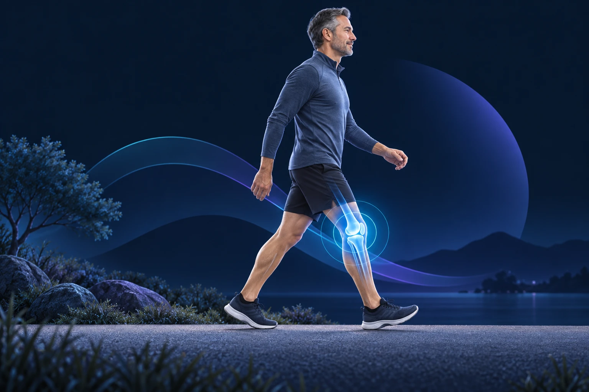

Genou gonflé : pourquoi et quand consulter ?
Publié le

Un genou qui gonfle peut devenir difficile à plier, donner une impression de tension ou gêner la marche. Le volume du gonflement ne suffit pas à déterminer sa cause. Le contexte d’apparition, la douleur et les signes associés sont les premiers éléments à préciser.
Gonflement et épanchement : est-ce la même chose ?
Un épanchement correspond à une accumulation de liquide dans l’articulation. Mais un gonflement peut aussi venir des tissus autour du genou, par exemple d’une bourse située devant la rotule. L’examen permet de localiser le problème. Après une torsion ou un choc, une lésion ligamentaire, méniscale ou osseuse peut être en cause. Sans accident, une poussée d’arthrose ou une maladie inflammatoire font partie des possibilités, sans résumer tous les diagnostics. Assurance Maladie : les causes des douleurs du genou.
Quand faut-il consulter rapidement ?
Un genou rouge, chaud, très gonflé, une douleur intense ou de la fièvre nécessitent une évaluation dans la journée. Un gonflement sous anticoagulants mérite aussi un avis rapide. Une infection doit notamment pouvoir être recherchée. Après un traumatisme grave, si vous ne pouvez pas prendre appui ou marcher, contactez le 15 ou le 112 pour être orienté. Ne reportez pas cette évaluation en attendant un rendez-vous de consultation programmé. Assurance Maladie : quand consulter.
Quels examens peuvent être utiles ?
Le médecin recherche d’abord les circonstances du gonflement, les zones douloureuses, la mobilité et la stabilité. Selon le contexte, il peut proposer des radiographies, une échographie, une IRM ou une analyse du liquide articulaire. Tous ces examens ne sont pas nécessaires pour chaque patient. Une ponction répond à une question médicale précise ; elle n’est pas un geste systématique devant tout genou gonflé. Assurance Maladie : bilan d’une douleur du genou.
Que noter avant le rendez-vous ?
Indiquez quand le gonflement a commencé, s’il suit un accident et s’il revient après une activité particulière. Mentionnez les blocages, les dérobements, les traitements en cours et les opérations antérieures. Apportez les images et comptes rendus disponibles. Une question utile à poser est : « Quelle cause explique le gonflement et quels signes doivent me faire reconsulter ? »
En attendant un avis, interrompez l’activité qui déclenche la douleur. Une poche froide enveloppée dans un linge peut aider ; ne l’appliquez pas directement sur la peau. N’essayez pas de forcer un genou bloqué ni de reprendre le sport pour le « débloquer ». Les consignes après une opération restent celles de votre équipe soignante.
Ces informations générales ne remplacent pas un avis médical personnalisé.